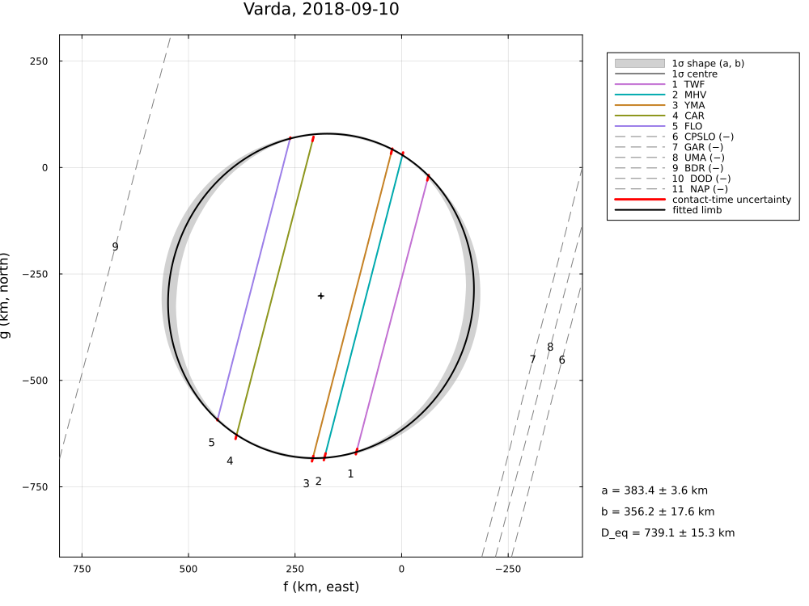
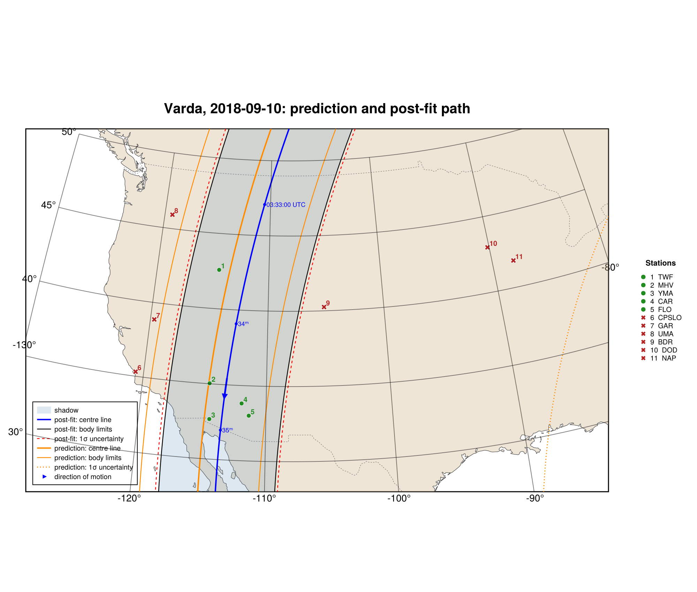

Varda, 2018 September 10
The stellar occultation by (174567) Varda on 2018 September 10, reduced from the published timings of Souami et al. (2020), A&A 643, A125, "A multi-chord stellar occultation by the large trans-Neptunian object (174567) Varda": five positive chords and six negative chords.
The example covers the chord lengths, the limb fit (Table 5), the posterior, the geometric albedo and the astrometry. The limb and χ² are reproduced, and the astrometry to 0.01 mas.
The data are transcribed in examples/data/varda_20180910.jl, with the stored JPL Horizons ephemeris, so the script runs offline:
julia --project=. examples/varda_2018.jl [output_dir] (default: examples/output/varda_2018)The code is not run when the manual is built. The output after each section is that of the last run of examples/varda_2018.jl, stored in examples/output/varda_2018/output.txt.
using Occultations, Random, Printf, Statistics
using Plots
import CairoMakie # saves the GeoMakie maps (Makie figures)
include(joinpath(@__DIR__, "standard_figures.jl"))
include(joinpath(@__DIR__, "data", "varda_20180910.jl"))
out = length(ARGS) >= 1 ? ARGS[1] : mkpath(joinpath(@__DIR__, "output", "varda_2018"))
rng = MersenneTwister(2018)
P = VARDA_PAPER
q(x) = quantile(x, [0.15865525393145707, 0.5, 0.8413447460685429])
pm(x; d=1) = (v = q(x); Printf.format(Printf.Format("%.$(d)f -%.$(d)f +%.$(d)f"), v[2], v[2] - v[1], v[3] - v[2]))Event, geometry and chords (paper values in parentheses)
ev = varda_event()
D = ev.ca.dist_km
@printf("%d positive, %d negative chords; distance %.4f au (%.4f), shadow velocity %.2f km/s (%.2f), stellar diameter %.2f km (%.2f)\n",
count(ispositive, ev.chords), count(isnegative, ev.chords), D / 1.495978707e8, P.distance_au, ev.ca.vel, P.velocity,
apparent_diameter(ev.star, D), P.star_diameter_km)
for c in ev.chords
ispositive(c) || continue
tr = track(ev, c)
ti, te = c.contacts[1].time, c.contacts[2].time
f1, g1 = tr(ti - ev.tref); f2, g2 = tr(te - ev.tref)
@printf(" %-4s duration %.2f s (%.2f), chord %.1f km (%.1f ± %.1f)\n", c.name, te - ti, P.durations[c.name][1],
hypot(f2 - f1, g2 - g1), P.chords[c.name]...)
end5 positive, 6 negative chords; distance 46.6379 au (46.6335), shadow velocity 10.86 km/s (10.86), stellar diameter 0.82 km (0.82)
TWF duration 61.73 s (61.73), chord 664.8 km (670.4 ± 9.2)
MHV duration 68.28 s (68.28), chord 734.8 km (741.5 ± 8.9)
YMA duration 69.29 s (69.29), chord 745.6 km (752.5 ± 9.1)
CAR duration 67.13 s (67.13), chord 722.5 km (729.0 ± 7.2)
FLO duration 63.45 s (63.45), chord 682.9 km (689.1 ± 2.2)Limb fit (Table 5; P′ of the minor axis from north towards east)
row(label, r) = @printf("%-30s a′ = %5.1f ± %4.1f ε′ = %.3f ± %.3f P′ = %5.1f ± %4.1f° R′_eq = %5.1f ± %4.1f km χ²/dof = %.2f\n",
label, r[:equatorial_radius]..., r[:oblateness]..., mod(r[:position_angle][1] + 90, 180) - 90,
r[:position_angle][2], r[:equivalent_radius]..., reduced_chi2(r))
@printf("%-30s a′ = %5.1f ± %4.1f ε′ = %.3f ± %.3f P′ = %5.1f ± %4.1f° R′_eq = %5.1f ± %4.1f km χ²/dof = %.2f\n",
"published (N = 10)", P.a..., P.oblateness..., P.position_angle..., P.R_equiv..., P.chi2_pdf)
rr = fit_limb(ev; residual=:radial, rng=rng)
rc = fit_limb(ev; residual=:chord, rng=rng)
row("radial residuals (as the paper)", rr)
row("residuals along the chords", rc)
println("closest negative chords:")
for x in first(check_negative_chords(rr), 3)
@printf(" %-6s %s, %6.1f km from the limb\n", x.chord, x.conflict ? "CROSSES THE LIMB" : "consistent", x.distance)
endpublished (N = 10) a′ = 383.0 ± 3.0 ε′ = 0.066 ± 0.047 P′ = 67.0 ± 8.0° R′_eq = 370.0 ± 7.0 km χ²/dof = 1.53
radial residuals (as the paper) a′ = 383.4 ± 3.6 ε′ = 0.071 ± 0.054 P′ = 72.4 ± 4.7° R′_eq = 369.6 ± 7.7 km χ²/dof = 1.49
residuals along the chords a′ = 383.2 ± 3.4 ε′ = 0.070 ± 0.050 P′ = 72.5 ± 4.4° R′_eq = 369.7 ± 6.9 km χ²/dof = 1.69
closest negative chords:
BDR consistent, 139.8 km from the limb
GAR consistent, 162.1 km from the limb
UMA consistent, 194.5 km from the limbPosterior and albedo (H_V = 3.81 ± 0.01)
post = sample(rr; nsteps=5000, rng=rng)
S = samples(post)
col(n) = S[:, findfirst(==(n), post.names)]
A, ε = col(:equatorial_radius), col(:oblateness)
Req = A .* sqrt.(1 .- ε)
@printf("a′ = %s km, ε′ = %s, P′ = %s°, R′_eq = %s km\n", pm(A), pm(ε; d=3), pm(mod.(col(:position_angle) .+ 90, 180) .- 90),
pm(Req))
# p_V = (au / R_equiv)² 10^{0.4 (H_sun − H)}, H_sun = −26.74 (footnote 8 of the paper)
pV = [(149597870.7 / R)^2 * 10^(0.4 * (-26.74 - (P.H_V[1] + P.H_V[2] * randn(rng)))) for R in Req]
@printf("geometric albedo %s (paper %.3f ± %.3f; R′_eq ± 7 km alone gives ± %.3f)\n", pm(pV; d=3), P.albedo...,
2 * P.albedo[1] * P.R_equiv[2] / P.R_equiv[1])a′ = 382.6 -2.4 +4.2 km, ε′ = 0.027 -0.019 +0.047, P′ = 24.0 -48.0 +48.0°, R′_eq = 377.6 -8.2 +4.1 km
geometric albedo 0.095 -0.002 +0.004 (paper 0.099 ± 0.002; R′_eq ± 7 km alone gives ± 0.004)Astrometry (Table 5)
t = Epoch(P.astrometry.epoch)
a = astrometry(rr)
ra_, dec_, _ = ephem_radec(ev.body, t)
r_, d_ = Occultations.offset_radec(ra_, dec_, a.offset_ra, a.offset_dec)
@printf(" here %s UTC: RA %s Dec %s (σ %.2f, %.2f mas)\n", P.astrometry.epoch, format_ra(r_; digits=5),
format_dec(d_; digits=4), a.ra_err, a.dec_err)
@printf(" published RA %s Dec %s (σ %.3f, %.3f mas)\n", P.astrometry.ra, P.astrometry.dec,
P.astrometry.ra_err, P.astrometry.dec_err) here 2018-09-10T03:34:00 UTC: RA 17 18 25.12973 Dec -02 05 14.3055 (σ 0.23, 0.11 mas)
published RA 17 18 25.12972 Dec -02 05 14.3055 (σ 0.197, 0.143 mas)Figures
savefig(plot(ev; title="Varda, 2018-09-10: chords", size=(1000, 750)), joinpath(out, "varda_chords.png"))
savefig(cornerplot(post; vars=[:equatorial_radius, :oblateness, :position_angle],
axislabels=Dict(:equatorial_radius => "a′ [km]", :oblateness => "ε′", :position_angle => "P′ [°]"),
truths=Dict(:equatorial_radius => P.a[1], :oblateness => P.oblateness[1],
:position_angle => P.position_angle[1]), truth_label="Souami et al. 2020"),
joinpath(out, "varda_corner.png"))
# the standard figures: limb fits (default, 68.3 % region, as the paper), posterior, maps (prediction,
# post-fit, comparison) and the globe
standard_figures("varda", rr; out=out, posterior=post, error_mas=43.1, error_note="NIMA v6 across-track",
projection="+proj=laea +lon_0=-108 +lat_0=38", limits=(-128, -84, 28, 50), window=600, marks=60)
println("figures written to ", out)The limb fit (radial residuals, as the paper), and the prediction and post-fit shadow path; the prediction uses the across-track uncertainty of the NIMA v6 ephemeris (43.1 mas):


The results are discussed in Comparison with published reductions.